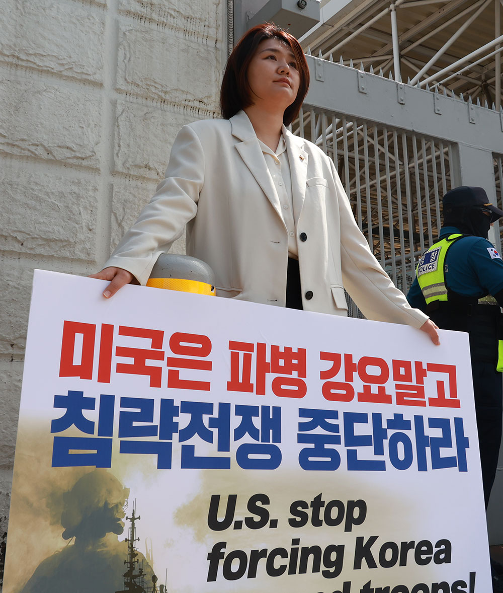
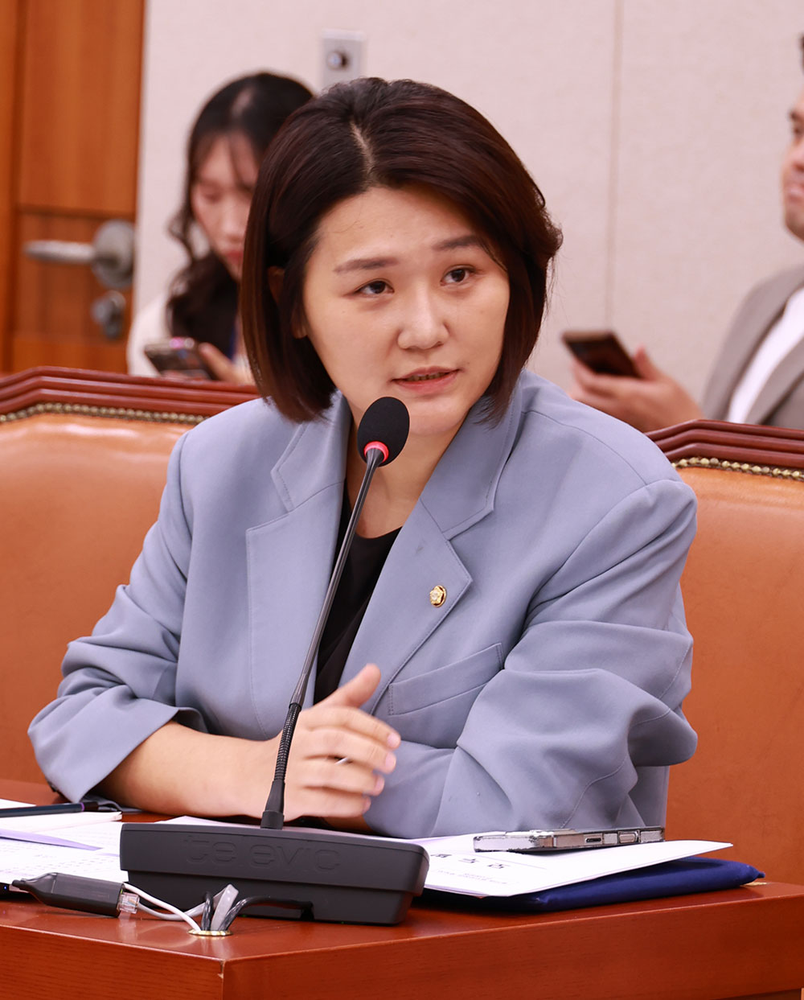

‘대한민국은
국제 평화의 유지에 노력하고
침략적 전쟁을 부인한다.’
우리 헌법 5조입니다.
정부가 호르무즈 파병을 검토하고 있다는 보도가 나오자, 손솔은 미 대사관 앞으로 달려갔습니다.

국회의원 손솔 의정보고서
2026년 9월호
우리 헌법 5조입니다.
정부가 호르무즈 파병을 검토하고 있다는 보도가 나오자, 손솔은 미 대사관 앞으로 달려갔습니다.

법무부장관 인사청문회에서도
호르무즈 파병에 반대해야함을
강조했습니다

대통령이 전쟁에 개입하는 파병은 없다고 발언한 지금,
국회가 파병 반대 결의안을 통과시키도록
손솔과 진보당이 앞장섭니다.
풍성한 가을, 동탄의 구석구석 찾아뵙고 마음을 나눴습니다.
당원들과 동탄 곳곳에서 주민을 만났던 날,
흔쾌히 더 나은 동탄을 위한 의견을 나눠주신
1200명의 주민 여러분께 감사드립니다.
손솔의 든든한 편이 되어주세요.
열정적인 의정활동으로 보답하겠습니다.